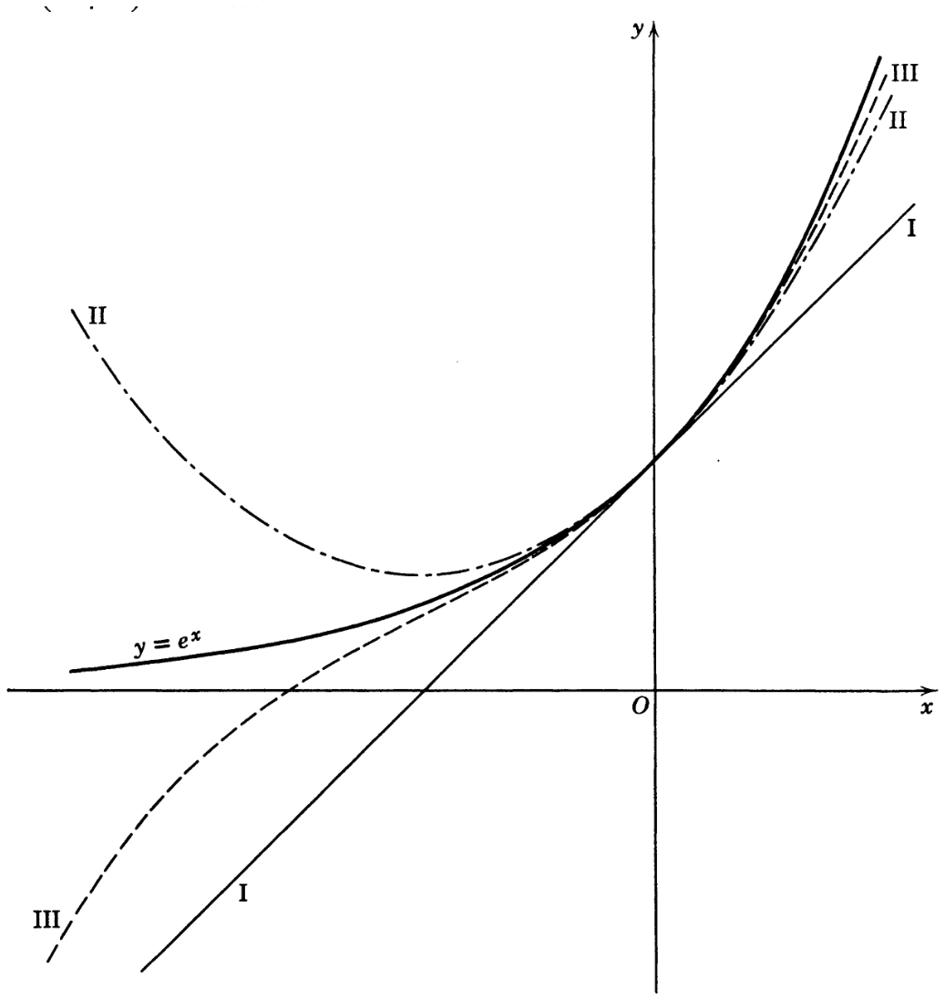

利用泰勒定理，可以细致地描述函数 f(x) 在 x=a 附近的性态，也就是曲线在它的一点附近的形状。因为从 a 移到邻近点 a+h 时，函数的增量可以分解成关于 h 的一阶、二阶等各阶小量之和。
a. 曲线的密切
高阶接触。 若两条曲线 y=f(x)、y=g(x) 在 x=a 处相交，并有共同的切线，就说它们相切，或有一阶接触。此时 f(a+h) 和 g(a+h) 泰勒展开的零阶项和一阶项相同。若二阶导数也相同，则称两曲线有二阶接触，展开的二阶项也相同。若两函数至少有连续的三阶导数，则对差 D(x)=f(x)−g(x) 有
D(a+h)=f(a+h)−g(a+h)=3!h3D′′′(a+θh)=3!h3F(h),且当 h→0 时，F(h)→f′′′(a)−g′′′(a)。所以差至少是 h 的三阶小量。
一般地，设 f(a)=g(a), f′(a)=g′(a),…, f(n)(a)=g(n)(a)，且 n+1 阶导数连续。这时称两曲线在 x=a 有 n 阶接触。两函数之差具有如下形式：
D(a+h)=f(a+h)−g(a+h)=(n+1)!hn+1D(n+1)(a+θh)=(n+1)!hn+1F(h).因为 0≤θ≤1，F(h) 趋于 f(n+1)(a)−g(n+1)(a)。所以在接触点，两函数之差至少消失到 n+1 阶。

图 5.1 指数曲线的密切多项式曲线。
泰勒多项式 Pn(x)=f(a)+(x−a)f′(a)/1!+⋯+(x−a)nf(n)(a)/n! 所确定的几何图形，正是在给定点与指定函数图像有尽可能高阶接触的 n 次“抛物线”。因此它们有时被称为密切抛物线（只有 n=2 时才是通常所说的抛物线）。图 5.1 给出 y=ex 在 x=0 处的前三条密切曲线。
有 n 阶接触的曲线也可能有更高阶接触，因为还有可能 f(n+1)(a)=g(n+1)(a)。若这两个导数不相等，就说接触的阶恰为 n。¹
原注 1 接触阶是真正的几何关系，不因更换坐标轴而改变。用坐标变换公式容易证明（见第四章第 360 页）。
偶数阶和奇数阶的接触。 从公式和直观都可以看出一个初学者常会注意到的事实。若接触阶恰为偶数 n，则两函数在接触点的前 n 阶导数相同，n+1 阶导数不同。于是对于绝对值很小的正、负 h，差 f(a+h)−g(a+h) 符号相反，两条曲线在接触点穿过彼此。例如二阶接触时，若三阶导数不同，就会如此。若接触阶恰为奇数（如普通的一阶接触），差在点的两侧同号，曲线便不相穿。最简单的例子是曲线与它的切线。切线要穿过曲线，接触至少要达到二阶；恰为偶数阶时确会相穿，例如 f′′(x)=0 而 f′′′(x)=0 的普通拐点。奇数阶接触时切线不穿过曲线，例如二阶导数不为零的普通点，以及 y=x4 的原点。
由第四章第 360 页可知，若把 x=a 处的曲率圆在该点附近写成 y=g(x)，则除了 g(a)=f(a), g′(a)=f′(a) 以外，还有 g′′(a)=f′′(a)。所以曲率圆就是该点的密切圆，即在该点与曲线有二阶接触的圆。在拐点，更一般地在曲率为零、曲率半径无穷大的点，曲率圆在极限下退化为切线。通常接触阶不高于二阶，这时曲率圆在密切点也会穿过曲线（参见第 359 页图 4.23）。
最后，有时把恰为 m 阶的接触描述为两曲线有“m+1 个无穷邻近的公共点”。这句话须用极限来理解。设两曲线有 m+1 个互异公共点 P,P1,…,Pm，令所有 Pi 趋于 P，必要时改变其中一条曲线，则在极限位置可以期望获得 m 阶接触。例如过曲线 C 的三点 P,P1,P2 作圆，令 P1,P2 趋于 P，就会看到该圆趋于 C 在 P 处的曲率圆（见第 437 页第 4 题）。
b. 关于相对极大值与极小值的理论
如第三章第 243 页所见，若 f′(a)=0，则 f′′(a)<0 是相对极大的充分条件，f′′(a)>0 是相对极小的充分条件。这些条件并非必要。当 f′′(a)=0 时，点 a 可以是极大点、极小点，也可能两者都不是。y=−x4, y=x4, y=x3 的原点分别给出三个例子。
泰勒定理立刻给出了更一般的充分条件。把 f(a+h) 按 h 的幂展开，考察常数项以后第一个非零项的幂次。若为偶数次，系数为负时取极大，为正时取极小。若为奇数次（且一阶导数已假定为零），则出现具有水平切线的拐点，没有极值。读者可以利用余项公式补全论证。¹
原注 1 第 242 页给出的充要条件更一般，在应用中也更方便。若一阶导数 f′(x) 只在有限多个点消失，则其中某点为极大点或极小点的充要条件，就是越过该点时 f′ 变号。